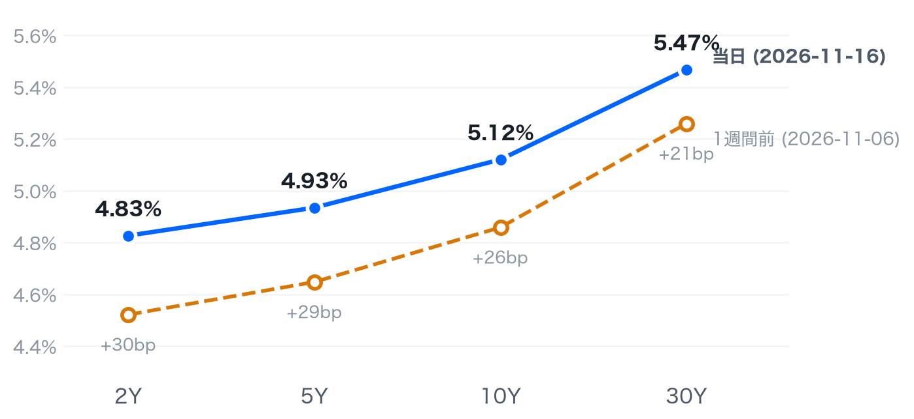

エヌビディア決算を翌日に控え、商務省がAI半導体のリモートアクセスを制限する規定を発表した日、半導体・メモリー・光通信・電力設備がそろって売られ、S&P500は1.92%下落した。上昇したのは生活必需品と公益事業のみで、三指数とも安値圏で終えた。
この下落は決算・上場を控えたリスク削減とみるが、需要・規制の再評価という反論を一日の終値で排除することはできない。どちらかは、11月17日の引け後に発表されるエヌビディア決算と、11月23日までにテクノロジー業種が市場をアウトパフォームするかどうかで確認する。
エヌビディア決算を翌日に控えた11月16日、AIハードウェアは業種を問わず売られた。同日、商務省産業安全保障局は、中国系企業に演算能力を提供する海外データセンターへの先端半導体の輸送や、インドネシア・マレーシア・シンガポール・タイ・ブラジルへの輸出に許可を求める規定を発表した。引け後の記事は、この規定に加え、決算とアンソロピックの上場を控えた様子見、ジェンスン・ファン退任後に冷めたAI熱を原因に挙げた。テクノロジー業種は3.24%下落し、S&P500を1.32%ポイント下回った。メモリー・光通信・電力設備の銘柄も大きく下げた。
われわれはこの下落を、需要見通しが変わった結果というより、結果が二択に分かれるイベントを前にした持ち高の縮小に近いとみる。規定は対象国で営業する米国本社企業を例外とし、エヌビディアの会社ガイダンスはすでに中国のデータセンター売上高を0と想定していたとの報道があった。平均的な銘柄は指数ほど下げず、生活必需品・公益事業は上昇しており、損失は少数の大型テクノロジー株に集中した。市場の一部では、半導体セクターは極端な売りの後で一定のデリスキングが進み、グローバルヘッジファンドのネットエクスポージャーが年初来高値比で67%減ったとの見方も出た。最も強い反論は需要・規制の再評価だ。許可対象5カ国のデータセンター需要が阻まれ、議会の監視が続けば、決算が予想どおりでもディスカウントは残る。ジ・インフォメーションを引用し、エヌビディアの半導体を購入してきたあるクラウド顧客がAMDやグーグルの半導体を検討中であり、コレット・クレス暫定CEOがファンより保守的な方針を取り得るとの見方も出た。テクノロジー業種の相対パフォーマンスについて市場が織り込んだ期待は把握できておらず、エヌビディア一銘柄についてもオプション市場が織り込む変動率が約±10.6%と報じられたにすぎないため、この差がすでに価格に反映されているかは分からない。
半導体・AIハードウェア業種の相対リターンはこの日さらに悪化したが、翌日に結論が分かれる材料である決算を控えており、現時点では新たな投資アイデアは出さない。リスク削減だったのであれば、決算が不確実性を和らげた後にメモリー・光通信まで幅広く戻るはずで、その反応は一週間以内に見えてくる。キウム証券のキム・スンヒョク アナリストも、今週のエヌビディア決算とアンソロピック上場の成否が、AIハードウェアの反発が続くかどうかを分けるカギになると指摘した。表現手段を考えるなら、テクノロジー業種ETFとS&P500の相対比較が最も単純だが、そのETFはエヌビディアとソフトウェアの比重が大きく、ハードウェア銘柄群とは基礎が異なる。スプレッド・借り入れコスト・保有銘柄・リスク限度も示されていない。生活必需品・公益事業が上昇したことは、ディフェンシブ・スタイルの相対的な強さが続いているという観察にとどまる。
この判断は、11月16日の終値と比べた11月23日の終値で、テクノロジー業種の累積騰落率がS&P500の累積騰落率を3.03%ポイント以上上回れば裏付けられ、3.03%ポイント以上下回れば弱まって、需要・規制の再評価を優先的な説明とみる。その間であれば結論は出さず、方向が合っていても同期間に10年債利回りが20bp以上低下した場合は、金利低下に伴うグロース株の反発が重なったものとみて、原因は判断しない。最初の材料は11月17日の引け後に発表されるエヌビディア決算のガイダンスと中国に関する説明で、同日朝の小売売上高の後に2年債利回りが4.827%から10年債利回りより大きく上昇すれば、カーブに関する判断を弱める最初のシグナルとなる。
出所: Reuters, Pepperstone
| 指数 | 終値 | 騰落 | 基準日 |
|---|---|---|---|
| 日経225 | 59,662.02 | -2.42% | 11月16日 |
| ハンセン | 23,753.84 | +0.49% | 11月16日 |
| 上海総合 | 3,602.57 | -0.87% | 11月16日 |
| DAX | 26,598.64 | -0.57% | 11月16日 |
| FTSE100 | 10,881.55 | -0.19% | 11月16日 |
| ユーロ・ストックス50 | 6,348.35 | -0.60% | 11月16日 |
| VIX | 22.91 | +3.61p | 11月16日 |
六つの指数とVIXはいずれも11月16日の値である。VIXの騰落はポイントで示す。(2026年11月19日訂正:当初はアジア三指数とDAX・ユーロストックス50を直前のセッションである11月13日の終値で掲載していた。11月16日の終値に改め、下の地域別動向の段落も修正した。)
アジアと欧州も米国と同じく軟調だった。アジア三指数は平均0.93%、欧州三指数は平均0.45%下落した。アジアは地域内でも明暗が分かれた。日経225が2.42%下落する一方、ハンセン指数は0.49%上昇した。
夜間のS&P先物(ES)は、日曜18:30(ET)の高値7,614から07:00(ET)の安値7,520まで1.25%のレンジで動いた。ナスダック先物(NQ)は同じ18:30(ET)の高値から07:30(ET)の安値まで2.63%のレンジで、より大きく下落した。先物は取引再開直後が高値で、朝まで下落したが、その安値と重なる単一の材料は確認できなかった。現物はS&P -0.63%、ナスダック -1.19%、ラッセル2000 -0.47%のギャップダウンで始まった。
平均的な銘柄は指数ほど下げなかった。S&Pの均等加重指数から時価総額加重指数を引いたリターン差は+0.9%ポイントで、少数の銘柄が指数を押し下げる展開だった。S&P500・ナスダック・ラッセル2000はいずれも安値圏で終えた。
安値圏引けの境界は、S&P500・ナスダック・ラッセル2000の三指数について直近3年間の日次観測値2,253個で測り直した基準である。終値がその日の高値と安値の間のどの位置にあるかを毎日測って集め、そのうち最も低い位置で終わった4分の1に入る日を安値圏引けと呼ぶ。(2026年11月17日訂正:当初は標本を「2,253営業日」と記した。営業日数ではなく、三指数の日次観測値を合わせた個数である。)
AI関連ハードウエアの売りが株式を押し下げ、その株安の中で国債が短期ゾーン中心に買われた日である。原油はホルムズ海峡の物流量回復という別の材料を受けて下落した。通常取引は寄り付き直後が高値で、午後まで売り圧力が続いた。場中の安値からは一部反発したが、安値付近で引けた。(2026年11月17日訂正:当初は「一日を通して戻りのないまま終えた」と記した。三指数とも場中安値より高い水準で引けたため、訂正した。)通常取引終了後に指数を動かす材料は確認されておらず、エヌビディアの決算は11月17日の取引終了後に発表される。
| 指数 | 終値 | 騰落率 |
|---|---|---|
| S&P500バリュー | 239.63 | -1.04% |
| ダウ・ジョーンズ | 51,608.17 | -1.41% |
| ラッセル2000 | 2,742.94 | -1.70% |
| S&P500 | 7,416.59 | -1.92% |
| ナスダック | 24,509.76 | -2.49% |
| S&P500グロース | 129.12 | -2.62% |
| セクター | 騰落率 |
|---|---|
| 生活必需品 | +0.27% |
| 公益事業 | +0.18% |
| 不動産 | -0.27% |
| ヘルスケア | -0.51% |
| 金融 | -0.85% |
| 素材 | -1.46% |
| 一般消費財 | -1.53% |
| コミュニケーション・サービス | -1.72% |
| 資本財・サービス | -1.85% |
| エネルギー | -1.96% |
| 情報技術 | -3.24% |
AIハードウェアの売りでS&P500は1.92%安の7,416.59で終え、通常の一日の値動きの二倍ほど振れた。ナスダックは2.49%安の24,509.76、ダウは1.41%安の51,608.17、ラッセル2000は1.70%安の2,742.94だった。11業種のうち上昇したのは生活必需品(+0.27%)と公益事業(+0.18%)の二つだけで、VIXは3.61ポイント上昇の22.91と、直近2年(504営業日)のうち高い方から13%以内に入った。
下落の中心は半導体だった。フィラデルフィア半導体株指数が約5%下落したとの報道があり、引け後の記事は、商務省のリモートアクセス制限規定、翌日のエヌビディア決算と今週のアンソロピックの上場を控えた様子見、ジェンスン・ファン退任後に冷めたAI熱をあわせて原因に挙げた。上位19銘柄のテクノロジー株の時価総額が場中に約9,600億ドル減ったとの集計も出た。グロース株が2.62%下落する間にバリュー株は1.04%下落し、スタイル間の差は1.58%ポイントに開いた。半導体以外でも、ソフトウェア・インターネットの大型株が同時に売られた。規定・決算待ち・AI熱の冷却のうちどれがより強く押し下げたかは、一日の終値では切り分けられない。
場中は、戻りを試す動きが一度頭を抑えられた後、売りが午後まで深まった。S&Pは始値の7,514が事実上その日の高値で、14:30(ET)ごろに7,400まで始値から1.51%下落した後、安値圏で終えた。エヌビディアは寄り付き直後に163.00ドルまで始値から2.51%上昇したが、13:30(ET)ごろに155.01ドルまで押し戻され、序盤の戻りが抑えられたことがこの日唯一の転換点だ。抑えられた時点の単一の材料は確認できなかった。正午(ET)のウォーシュ議長の講演と時間帯は重なるが、売りは寄り付きから進行中だった。
指数下落の半分超をテクノロジー業種が占めた。推定寄与度ではテクノロジーが-1.09%ポイント、コミュニケーション・サービスが-0.22%ポイント、一般消費財が-0.21%ポイント、資本財が-0.11%ポイント、金融が-0.09%ポイント、エネルギーとヘルスケアがそれぞれ-0.05%ポイントで、生活必需品と公益事業はそれぞれ+0.01%ポイントと下げ幅をほとんど縮められなかった。業種合計で説明できない部分は-0.12%ポイントだ。
推定寄与度は業種ウェイトを直接取得せず、直近252営業日の指数・業種リターンから推定したウェイトを掛けた値である。素材と不動産はウェイトを推定できず除外した。変動幅は、直近60営業日の平均的な一日の変動と比べてS&Pが2.06倍、ナスダックが1.89倍、ラッセル2000が1.53倍である。
下落は深かったが、広範囲には及ばなかった。平均的な銘柄が指数ほど下げなかったことは、損失が大型テクノロジー株に集中したことを意味し、この点は市場全体のリスク回避というよりAIハードウェアへのエクスポージャーを減らす売りに近い。一方、三指数がいずれも安値圏で終え、売り圧力が引けまで解消しなかったことは、この下落を一日限りのノイズとして片づけにくくしている。ラッセル2000はナスダックより下げが小さかったが、1.70%の下落であり、小型株は逃避先にならなかった。
出所: Reuters, Benzinga
| 年限 | 終値 | 前日比(bp) | 1週間前 | 週間変化(bp) |
|---|---|---|---|---|
| 2Y | 4.827% | -4.7 | 4.522% | +30.5 |
| 5Y | 4.935% | -4.6 | 4.648% | +28.7 |
| 10Y | 5.121% | -3.2 | 4.859% | +26.2 |
| 30Y | 5.468% | -1.3 | 5.260% | +20.8 |
株式が売られた日、国債は短期債中心に買われた。2年債利回りは4.7bp低下の4.827%、5年債利回りは4.6bp低下の4.935%と最も大きく低下し、10年債利回りは3.2bp低下の5.121%、30年債利回りは1.3bp低下の5.468%にとどまった。長期債の水準は依然として高い。10年債利回りは直近2年(504営業日)のうちこれより高かった日が18日だけで、30年債利回りは16日だけだ。

カーブのチャートの「今日」は11月16日の終値、「1週間前」は11月6日の終値である。1週間前と比べると、2年債利回りは30.5bp、10年債利回りは26.2bp、30年債利回りは20.8bp高い。
一日では、2年債利回りが10年債利回りより1.5bp大きく低下したブル・スティープ化だった。2s10sは29.4bp、5s30sは53.3bpに拡大した。1週間前と比べると、2年債利回りが30年債利回りより9.7bp大きく上昇したベア・フラット化が依然としてカーブの大きな形であり、この日は、その上で短期債が小幅に巻き戻した程度である。
利回りを押し下げたのは、株安に伴う安全資産買いだったとみる。国債が株安とウォーシュ議長の「AIが失望させる可能性がある」とのシナリオへの言及を受けて小幅に買われたとの報道があり、CME FedWatchベースの12月25bp利上げ確率は93.7~95.7%と報じられ、利上げ自体はほぼ織り込まれている。それでも短期債利回りがさらに低下したのは、12月の利上げ後の経路や50bpの可能性の一部がリスク回避の中で織り込みから外れた余地を示している。ただし、二つの確率の報道値は観測時刻が確認できず、11月13日の値と同じ基準では比較できないうえ、政策金利の経路を直接測る資料でも確認していない。
名目金利を実質金利と期待インフレ率に分解した最新のデータは11月13日のものだ。その日の10年債利回りの5bp上昇はすべて実質金利によるもので、5営業日に広げても31bpの上昇がすべて実質金利だった。11月16日の値は期待インフレ率のみが入っており、10年期待インフレ率は4bp低下の2.20%、5年期待インフレ率は5bp低下の2.25%と、同日にWTIが3%超下落したことと方向が一致する。実質金利の11月16日の値が出れば、この日の10年債利回りの3.2bp低下が物価の補償によるものか実質金利によるものかが確認できる。期待インフレ率にはリスク・流動性プレミアムも混じっている。ハイイールド債のスプレッドは11月13日時点で3.23%と5営業日で19bp縮小したが、これはこの日の株価急落前の値である。
5年先5年物の名目金利は5.32%、実質金利は3.14%(11月13日時点)。期待インフレ率側の数値との突き合わせはできず、リスクプレミアムが混じった値である。
出所:CNBC、Reuters
| 通貨ペア | 終値 | 騰落率 | 基準日 |
|---|---|---|---|
| DXY | 103.603 | +0.19% | 11月16日 |
| USD/KRW | 1,336.11 | +0.09% | 11月16日 |
| USD/JPY | 159.482 | -0.19% | 11月16日 |
| EUR/USD | 1.0999 | -0.25% | 11月16日 |
ドルは米金利が低下した日にも上昇した。ドル指数は0.19%上昇の103.603と、通常の半分強の動きにとどまり、ユーロ/ドルは0.25%下落の1.0999だ。ドル/円は0.19%下落の159.482円、ウォン/ドルは1,336.11ウォンで、いずれもほとんど動かなかった。ウォン/ドルは直近2年(504営業日)のうちこれより低かった日が11日だけの水準にとどまっている。
この日のドルを支えたのは金利差よりもリスク回避だとみる。米2年債利回りが4.7bp低下し、金利面はむしろドルに不利だったが、株式が急落した日にドルはユーロに対して強く、円に対しては弱かった。リスク回避時にドルと円が同時に買われる形と整合的だ。相手国の金利を併せて測っていないため、金利差が実際にどの程度動いたかは確認できておらず、ユーロ安に欧州固有の材料があったかも見つけられなかった。
為替はニューヨーク16:00 ETの価格で、前営業日の同時刻比である。決済値とは異なる場合がある。変動幅は直近60営業日の平均的な一日の変動に対し、ドル指数で0.59倍だ。
| 品目 | 終値 | 騰落率 |
|---|---|---|
| WTI | $85.53 | -3.82% |
| Brent | $92.35 | -3.93% |
| 天然ガス | $3.133 | -3.24% |
| 金 | $3,854.50 | -0.70% |
原油は供給正常化への期待から3%超下落した。WTIは3.82%安の85.53ドル、ブレントは3.93%安の92.35ドルで終え、最近の原油が大きく振れてきたため、この下げ幅も通常の一日の動きの1.3倍程度だ。天然ガスは3.24%安の3.133ドル、金は0.70%安の3,854.50ドルである。
ホルムズ海峡の物流量が回復する兆しと、国際エネルギー機関の第4四半期の供給過剰見通しが原油を押し下げたとの報道があった。同日、イラン海軍は海峡付近でタンカーが機雷に触れて火災が起きたと伝えたが、価格を押し戻すことはできなかった。WTIは早朝の89.49ドルの高値から午後に85.34ドルまで下げ、安値圏で引けた。ブレントとWTIの価格差は6.82ドルと、前営業日の7.20ドルから縮小しており、表のWTIは12月限、ブレントは1月限のため、価格差には限月の違いも含まれる。原油安は、この日に期待インフレ率が低下したことと方向が一致する。
金は、金利が低下し株式が急落した日にも上昇しなかった。安全資産需要が国債とドルに向かい、金には波及しなかったという観察にとどまり、金が売られた理由を示す材料は確認できていない。
商品・為替はニューヨーク16:00 ETの価格で、前営業日の同時刻比である。決済値とは異なる場合がある。
出所:MarineLink、Business Recorder、ADVFN、Asharq Al-Awsat
エヌビディア(-4.12%)、マイクロン(-7.62%)、AMD(-5.58%)、インテル(-7.02%)、マーベル(-7.27%)は、半導体・AIハードウェア関連株の下げを拡大させた銘柄だ。決算前日にAI熱が冷めたことと、商務省の中国向け遠隔アクセス制限規定が重なった売りと報じられ、エヌビディアは先週13%下落したのに続き、10月の高値より30%超低くなったとの報道があった。マイクロンには、連邦判事がマイクロン・サムスン・SKハイニックスの汎用DRAM供給談合をめぐる集団訴訟の棄却申し立てを退けたとの報が加わった。市場の一部では、セミアナリシスが機関投資家向けリポートで2027年のAIアクセラレーター市場見通しを7700億ドルから6270億ドルに引き下げ、2028年のHBM需要も30%下方修正したとの情報がXを通じて広がったとの見方も出た。
アルファベット(-4.07%)は、コミュニケーション・サービス業種の下げを主導した。新たなAIチップの許可規定とともに上位ハイテク株の時価総額が大きく減り、アルファベットがそのうち約1,350億ドルを失ったとの集計が出たが、アルファベット固有の材料は確認されていない。
P&G(+1.90%)は、生活必需品業種の相対的な強さを支えた銘柄だが、確認できた材料はない。
ユナイテッドヘルス(+1.12%)は指数の下げ幅を縮めた側で、確認できた材料はない。
サンディスク(-8.58%)、デル(-6.96%)、シーゲイト(-5.54%)は、AIチップ売りがメモリー・ストレージに波及した銘柄だ。サンディスクはエバーコアが目標株価2,500ドルを示したにもかかわらず下落し、数日後に8対1の株式分割を控えているとの報道があった。バーンスタインは、AIハードウェアが無差別な売りに巻き込まれ、デルとサンディスクは不当に売られたと評価したと報じられた。
この下げは業種全体の動きである。過去20営業日で、AIインフラ関連株は市場の動きを考慮してもなお17.08%アンダーパフォームしたが、グロース−バリュー、大型−小型、半導体の三軸に分けると、半導体軸の寄与が-15.46%ptと大半を占め、大型−小型の+1.09%pt、グロース−バリューの-0.29%ptは小さい。三軸で説明できない部分は-2.42%ptである。
AIインフラ関連株(マーベル、コヒーレント、ルメンタム、GEベルノバ、バーティブ)ベースで、市場感応度3.29を考慮した一日ごとの超過収益の20日合計である。軸ごとの寄与は、直近60営業日で測った感応度を掛けた値だ。
出所:Reuters、AP、GuruFocus、Benzinga、24/7 Wall St.、BigGo Finance
新たな経済指標がなく、米国の景気局面は成長横ばい・物価再加速のコストプッシュで5日目となる。成長スコア0.065と物価スコア0.647は11月13日の生産者物価の後から変わっておらず、スコアが現在の局面を示している。物価面の判断は、消費者物価の前年比二指標を除いた利用可能な指標に基づく。(2026年11月19日追記)局面が動くには、新たな発表が軸のスコアを境界の先へ押し出す必要があり、最初の材料は11月17日の小売売上高・鉱工業生産である。
雇用軸は改善で、新たな発表はない。雇用軸 +0.564
| 指標 | Actual | Forecast | Previous | 発表日 | 予想比 | 前回比 | トレンド |
|---|---|---|---|---|---|---|---|
| 求人件数(9月) | 7,523K | — | 7,190K | 2026-09基準月 | 改善 | 横ばい・3カ月平均 7,435K → 7,349K | |
| 新規失業保険申請件数 | 200,000 | — | 191,000 | 2026-11-12 (11月7日の週) | 悪化 | 改善(小幅)・4週平均 199K → 195K | |
| 新規申請件数4週平均 | 195,250 | — | 195,250 | 2026-11-12 (11月7日の週) | 横ばい | 改善(小幅)・4週平均 200K → 196K | |
| 失業保険継続受給者数 | 1,697,000 | — | 1,717,000 | 2026-11-12 (10月31日の週) | 改善 | 横ばい・4週平均 1,707K → 1,708K | |
| 非農業部門雇用者数変化(10月) | +165K | — | +60K | 2026-11-06 | 改善 | 改善(明確)・3カ月平均 +28K → +137K | |
| 失業率(10月) | 4.1% | — | 4.2% | 2026-11-06 | 改善 | 改善(小幅)・3カ月平均 4.20% → 4.13% | |
| 平均時給 MoM(10月) | +0.37% | — | +0.26% | 2026-11-06 | 改善 | 改善(明確)・3カ月平均 +0.20% → +0.32% |
生産・活動軸は悪化で、新たな発表はない。生産・活動軸 -0.618
| 指標 | Actual | Forecast | Previous | 発表日 | 予想比 | 前回比 | トレンド |
|---|---|---|---|---|---|---|---|
| 鉱工業生産 MoM(9月) | +0.66% | — | +0.06% | 2026-09基準月 | 改善 | 横ばい・3カ月平均 +0.40% → +0.32% | |
| 耐久財受注 MoM(9月) | +1.91% | — | +0.14% | 2026-09基準月 | 改善 | 悪化(小幅)・3カ月平均 +1.70% → +0.98% | |
| 製造業受注 MoM(9月) | +1.84% | — | +0.33% | 2026-09基準月 | 改善 | 悪化(小幅)・3カ月平均 +1.35% → +0.98% | |
| 建設支出 MoM(9月) | -1.85% | — | +1.98% | 2026-09基準月 | 悪化 | 改善(小幅)・3カ月平均 -0.18% → -0.01% | |
| 住宅着工件数(9月) | 1,221K | — | 1,288K | 2026-09基準月 | 悪化 | 悪化(緩やか)・3カ月平均 1,345K → 1,293K | |
| 新築住宅販売件数(9月) | 676K | — | 680K | 2026-09基準月 | 悪化 | 改善(小幅)・3カ月平均 652K → 668K | |
| 中古住宅販売件数(10月) | 375万 | — | 397万 | 2026-11-12 | 悪化 | 悪化(明確)・3カ月平均 4,127K → 3,883K | |
| 貿易収支(9月) | -$105.05B | — | -$105.74B | 2026-09基準月 | 改善 | 悪化(明確)・3カ月平均 -66.6 → -101.2 | |
| 実質GDP QoQ年率(第3四半期) | +3.4% | — | +2.2% | 2026年第3四半期 | 改善 | — | |
| フィラデルフィア連銀製造業景気指数(10月) | 20.9 | — | 37.8 | 2026-10基準月 | 悪化 | 改善(明確)・3カ月平均 17.1 → 35.4 |
消費軸は横ばいで、新たな発表はない。消費軸 +0.249
| 指標 | Actual | Forecast | Previous | 発表日 | 予想比 | 前回比 | トレンド |
|---|---|---|---|---|---|---|---|
| 小売売上高 MoM(9月) | +0.77% | — | +1.29% | 2026-09基準月 | 悪化 | 横ばい・3カ月平均 +0.61% → +0.55% | |
| ミシガン大学消費者信頼感指数(9月) | 48.1 | — | 51.7 | 2026-09基準月 | 悪化 | 改善(緩やか)・3カ月平均 48.0 → 51.7 |
物価軸は再加速で、新たな発表はない。物価軸は8指標のうち6指標で算出した。2025年10月のCPIの比較基準値が公式に提供されておらず、2026年10月の前年同月比の指標2つを計算から除外した。再加速は利用可能な指標に基づくシグナルであり、欠測の内容次第で物価判断は変わりうる。(2026年11月19日追記)物価軸 +0.647
| 指標 | Actual | Forecast | Previous | 発表日 | 予想比 | 前回比 | トレンド |
|---|---|---|---|---|---|---|---|
| PPI最終需要 MoM(10月) | +0.35% | 0.4% | +1.41% | 2026-11-13 | 下回る▼ | 下落 | 再加速(明確)・3カ月平均 +0.17% → +0.72% |
| CPI MoM(10月) | +0.35% | — | +0.65% | 2026-11-10 | 下落 | 再加速(明確)・3カ月平均 +0.04% → +0.46% | |
| Core CPI MoM(10月) | +0.30% | — | +0.33% | 2026-11-10 | 下落 | 再加速(明確)・3カ月平均 +0.14% → +0.31% | |
| PCE物価 YoY(9月) | 3.65% | — | 3.44% | 2026-09基準月 | 上昇 | 膠着・3カ月平均 3.62% → 3.49% | |
| Core PCE YoY(9月) | 3.12% | — | 3.03% | 2026-09基準月 | 上昇 | 膠着・3カ月平均 3.10% → 3.05% | |
| ミシガン大学1年先期待インフレ率(9月) | 4.6% | — | 4.0% | 2026-09基準月 | 上昇 | 減速(緩やか)・3カ月平均 4.70% → 4.27% |
直前比はActualをPreviousと比較したもので、トレンドは直近3カ月平均をその前の3カ月平均と比較したものである(週間の失業保険申請件数は4週平均同士)。トレンドの強さは、その指標が通常動く幅に対する大きさで、小さな変化は横ばいとみる。四半期指標であるGDPは二つの比較で同じ数値を用いるため、直前比のみを掲載する。
FRBの次の一手は12月9日のFOMCでの25bp利上げという判断を維持する。新たな発表がないため、タイミングも変わらない。CME FedWatchベースの12月25bp利上げ確率は93.7~95.7%と報じられたが、観測時刻が確認できないため一つには絞らず、1月会合の確率は確認できなかった。ウォーシュ議長の11月16日の講演は金利や短期の政策見通しに触れず、この判断に新たな根拠を加えなかった。
12月9日のFOMCまでにFRBの声明や議長発言が追加利上げの余地を閉ざせば、12月利上げを中心とする判断を撤回する。10月の生産者物価が予想を下回ったのに続き、11月17日の10月小売売上高も予想を下回り、CME FedWatchの12月利上げ確率が消費者物価の発表前の報道値(84%)を下回れば、12月利上げを中心とする判断を修正する。
アセット別の波及経路の方向は前日と変わらない。30年債利回りはこの日低下したが、5.468%と、債券の方向を中立に戻す基準(5.4%を5営業日下回る)には達しなかった。
出所:Reuters、CNBC
ウォーシュ議長は11月16日、FRB理事会とサンフランシスコ連銀が開いた生産性・雇用タスクフォースのカンファレンスの開会あいさつで、金利や短期の政策見通しには触れなかった。代わりに「超知能」と呼ぶAIが経済に与える影響を取り上げ、FRBスタッフがモデルで描いた三つのシナリオを紹介した。生産性向上の利益が労働と資本に均等に配分される場合、雇用の代替により失業率が完全雇用の水準を上回って上昇する場合、そしてAIが期待外れに終わり株価が下落して景気が減速する場合である。
Or SI could disappoint. After significant capital investment and stock market gains, expected returns could turn down and equity valuations could fall, leading to an economic slowdown and a more notable rise in unemployment.
あるいは、超知能が期待外れに終わる可能性もある。大規模な資本投資と株式市場の上昇の後に期待収益率が低下し、株式のバリュエーションが下がることで、景気減速とより明確な失業率の上昇につながり得る。
出所:11月16日 生産性・雇用タスクフォース・カンファレンス開会あいさつ・FRB
The Board's staff has begun to evaluate various contingencies, applying stylized, model-based frameworks to generate scenarios. These are illustrative scenarios, not forecasts.
理事会スタッフは、様式化したモデルベースの枠組みを適用してシナリオを作り、複数の不測の事態の評価を始めた。これは例示的なシナリオであり、見通しではない。
出所:11月16日 生産性・雇用タスクフォース・カンファレンス開会あいさつ・FRB
At the Fed, our role in all this is neither advocacy nor opposition. Our responsibility is to recognize that the widespread adoption of this technology will have significant impact on the economy, with important implications for monetary policy down the road.
FRBにおけるこの一連の動きについての我々の役割は、推進でも反対でもない。我々の責任は、この技術の広範な普及が経済に相当な影響を及ぼし、今後の金融政策に重要な含意を持つことを認識することである。
出所:11月16日 生産性・雇用タスクフォース・カンファレンス開会あいさつ・FRB
三つの引用をつなぐと、この講演の重みが定まる。議長は、AI投資の後に期待収益が低下して株価が下落する経路を、FRBが検討するシナリオの一つに挙げたが、それが見通しではないと明確に線を引き、金融政策への含意は「今後」の課題として先送りした。12月の利上げ判断を変える発言はなかった。残るのは、FRBがAIの期待外れを景気リスクの一つとして公式に議論し始めたという事実であり、そのシナリオが実際に進行しているかどうかは、FRB発言ではなくAI投資企業の決算とガイダンスにまず表れる。
講演は正午(ET)に始まり15分ほど続いたが、株売りはそれ以前から進行していた。ナスダックは13:30(ET)ごろ、S&Pは14:30(ET)ごろにその日の安値をつけ、安値は講演後に出たものの、両指数は寄り付き直後の高値からすでに下げていた。ウォーシュ発言が国債買いの要因の一つに挙げられたという報道はあるが、講演の効果とAI株自体の売りを切り分けた報道はない。
この講演を受けて投資アイデアを出すことはしない。発言は政策経路に触れておらず、シナリオが現実となるかを分ける材料は、11月17日のエヌビディア決算と11月18日のFOMC議事録である。
出所:CNBC、Yahoo Finance、mlq.ai
| 指数 | 順位(5営業日前) | 1カ月 | 3カ月 | SPY比3カ月 | SPY比の変化 | 12-1モメンタム | ボラティリティ | 1日VaR 95% | ベータ | 50/200日線 | 52週高値比 |
|---|---|---|---|---|---|---|---|---|---|---|---|
| 一般消費財 XLY | 5(6) | +5.1% | +1.8% | +5.1%p | +1.3%p | -2.3% | 19.9% | 1.7% | 0.97 | 上/上 | -4.5% |
| 金融 XLF | 7(8) | +4.8% | +0.9% | +4.3%p | +1.5%p | +6.5% | 16.4% | 1.4% | 0.59 | 上/上 | -1.7% |
| エネルギー XLE | 8(5) | -6.7% | +0.6% | +4.0%p | -0.4%p | +55.1% | 24.7% | 2.9% | -0.02 | 下/上 | -9.0% |
| ソフトウェア IGV | 10(11) | -5.1% | -2.9% | +0.4%p | +0.7%p | -2.3% | 33.9% | 3.5% | 1.33 | 下/上 | -12.1% |
| 住宅建設 XHB | 12(13) | +6.4% | -4.1% | -0.8%p | +0.5%p | -7.8% | 28.7% | 2.5% | 0.83 | 上/下 | -15.9% |
| 超大型株Top 50 XLG | 13(12) | -5.3% | -4.2% | -0.9%p | -0.3%p | +8.2% | 18.4% | 2.0% | 1.16 | 下/下 | -8.3% |
| 銀行 KBE | 15(14) | +3.7% | -6.0% | -2.7%p | -0.5%p | +13.9% | 16.8% | 1.4% | 0.45 | 上/上 | -7.5% |
| 小型株 IWM | 16(16) | +0.9% | -8.8% | -5.5%p | -1.7%p | +15.4% | 18.2% | 1.7% | 1.00 | 下/下 | -10.3% |
| 資本財・サービス XLI | 17(20) | -1.2% | -9.5% | -6.2%p | +0.6%p | +11.6% | 18.3% | 1.6% | 0.87 | 下/下 | -10.9% |
| 小型グロース IWO | 20(19) | +1.2% | -11.5% | -8.2%p | -2.2%p | +9.6% | 22.9% | 2.2% | 1.27 | 下/下 | -13.2% |
| 送電網 GRID | 21(22) | -8.1% | -14.9% | -11.5%p | +0.4%p | +12.1% | 30.0% | 3.5% | 1.42 | 下/下 | -21.4% |
| モメンタム・ファクター MTUM | 22(21) | -10.3% | -15.5% | -12.2%p | -1.2%p | +20.1% | 32.8% | 3.4% | 1.73 | 下/下 | -23.7% |
| 防衛 ITA | 23(23) | +0.1% | -16.9% | -13.6%p | -1.1%p | +2.2% | 22.1% | 2.1% | 0.79 | 下/下 | -17.3% |
| 半導体・AIハードウェア SMH | 24(24) | -14.4% | -18.9% | -15.6%p | -2.7%p | +57.0% | 47.7% | 5.2% | 2.44 | 下/下 | -30.9% |
| 金属・鉱業 XME | 25(25) | -10.9% | -20.8% | -17.5%p | -3.3%p | +9.6% | 35.1% | 3.8% | 1.56 | 下/下 | -32.2% |
| 指数 | 順位(5営業日前) | 1カ月 | 3カ月 | SPY比3カ月 | SPY比の変化 | 12-1モメンタム | ボラティリティ | 1日VaR 95% | ベータ | 50/200日線 | 52週高値比 |
|---|---|---|---|---|---|---|---|---|---|---|---|
| ヘルスケア XLV | 1(1) | +6.3% | +11.1% | +14.5%p | -0.1%p | +17.6% | 17.3% | 1.4% | 0.41 | 上/上 | -0.9% |
| 生活必需品 XLP | 2(2) | +5.7% | +8.9% | +12.3%p | +2.2%p | +16.4% | 17.8% | 1.4% | -0.03 | 上/上 | 0.0% |
| 配当 SCHD | 3(3) | +4.4% | +4.7% | +8.1%p | +1.1%p | +30.6% | 12.7% | 1.0% | 0.28 | 上/上 | -1.0% |
| 低ボラティリティ SPLV | 4(4) | +5.4% | +3.7% | +7.0%p | +1.5%p | +5.3% | 12.2% | 1.0% | 0.17 | 上/上 | -0.2% |
| 公益事業 XLU | 6(7) | +4.5% | +1.0% | +4.3%p | +1.1%p | -2.1% | 15.1% | 1.4% | 0.16 | 上/上 | -5.6% |
| クオリティ・ファクター QUAL | 9(9) | -1.9% | -1.3% | +2.0%p | +0.2%p | +16.5% | 13.1% | 0.8% | 0.79 | 下/上 | -3.1% |
| 指数 | 順位(5営業日前) | 1カ月 | 3カ月 | SPY比3カ月 | SPY比の変化 | 12-1モメンタム | ボラティリティ | 1日VaR 95% | ベータ | 50/200日線 | 52週高値比 |
|---|---|---|---|---|---|---|---|---|---|---|---|
| 欧州 VGK | 11(10) | +0.9% | -3.6% | -0.2%p | -0.1%p | +10.1% | 15.2% | 1.3% | 0.67 | 上/上 | -5.3% |
| 日本 EWJ | 14(15) | -5.3% | -5.8% | -2.4%p | +0.5%p | +19.2% | 21.4% | 1.8% | 1.24 | 下/下 | -9.5% |
| 新興国 EEM | 18(17) | -6.3% | -9.9% | -6.5%p | -1.9%p | +16.7% | 25.5% | 2.7% | 1.40 | 下/下 | -17.3% |
| 中国 MCHI | 19(18) | -4.2% | -10.7% | -7.3%p | -2.0%p | -19.1% | 17.5% | 1.8% | 0.29 | 下/下 | -23.2% |
| 指数 | 順位(5営業日前) | 1カ月 | 3カ月 | SPY比3カ月 | SPY比の変化 | 12-1モメンタム | ボラティリティ | 1日VaR 95% | ベータ | 50/200日線 | 52週高値比 |
|---|---|---|---|---|---|---|---|---|---|---|---|
| S&P 500 SPY | – | -3.0% | -3.3% | 0.0%p | – | +14.8% | 15.4% | 1.2% | 1.00 | 下/上 | -5.0% |
| S&P 500均等加重 RSP | – | +2.3% | 0.0% | +3.3%p | – | +15.7% | 12.9% | 1.0% | 0.64 | 上/上 | -2.0% |
| ナスダック100 QQQ | – | -6.8% | -7.7% | -4.3%p | – | +17.2% | 24.8% | 2.7% | 1.51 | 下/下 | -12.9% |
価格ベースの市場局面は10月30日からもみ合いで12営業日目となり、直前の局面は強気だった。この日、基準に基づく判定は初めて短期弱気に変わった。SPYが739.95で50日線(763.52)を下回り、52週高値比で-5.02%と、短期弱気の閾値(-5%)を下回ったためである。この判定が3営業日続けば、局面は短期弱気に切り替わる。SPYは200日移動平均線(729.58)を上回っている。
11月9日と比べると、半導体・AIハードウェアと金属・鉱業の相対収益率が最も大きく悪化した。半導体・AIハードウェアのSPY比3カ月相対収益率は-15.59%pで、一週間で2.74%p悪化し、順位は24位のままだった。金属・鉱業は-17.48%pで3.27%p悪化し、25位である。反対側では、生活必需品が+12.26%pと2.16%p改善し、2位を維持した。半導体の悪化は、この日のAIハードウェア売りが一週間の累積に加わったものであり、生活必需品の改善は、ディフェンシブ業種へのシフトが続いていることを示す。
リスクシグナルはリスク選好の縮小を示す方向に傾いた。VIXは22.91と過去2年のなかで高めの水準にあり、FRBのバランスシートで測った流動性は11月11日時点で引き締め方向にあり、10年実質金利は11月13日に2.91%と、5営業日で31bp上昇した。一方、ハイイールド・スプレッドは11月13日に3.23%と、5営業日で19bp縮小し、NFCIは11月6日時点で平均より緩和的で、信用指標はまだ揺らいでいない。二つの信用指標の値は、この日の株価急落以前のものである。
AIハードウェアの全面安を、決算・上場を控えたリスク縮小とみる判断(11月16日)を新たに立てる。起点は11月16日終値ベースで、テクノロジー・セクターETF(XLK)が164.76、S&P 500が7,416.59である。11月16日終値に対する11月23日終値で、テクノロジー・セクターの累積騰落率がS&P 500の累積騰落率より3.03%p以上高ければ裏付けられ、3.03%p以上低ければ弱まり、需要・規制の再評価を優先的な説明とみる。その間であれば結論は出さない。方向が合っていても、同期間に10年債利回りが20bp以上低下すれば、原因は判断しない。エヌビディア決算、アンソロピックの上場、規定のフォローアップは、この判断が扱う材料であり、結論を妨げない。3.03%pは直近20個の5営業日区間で測った同じ差の絶対値の平均で、その20個のうちテクノロジー・セクターが上回った区間は7個だった。日次終値の比較であるため、二つの指数の変動性の差は補正していない。
エヌビディアの下落を、決算発表まで続くガバナンス・ディスカウントとみる判断(11月9日)は、結論日であるこの日、方向は裏付けられたものの、原因は判断できないまま終了する。11月9日終値比でエヌビディアは12.610%下落し、S&P 500は1.766%下落して、差は-10.844%pと支持基準(-3.89%p以下)を超えた(前営業日は-9.010%p)。しかし、AIへのエクスポージャーは維持したままエヌビディア固有のリスクだけを減らすという判断の一つの柱は、AMD・ブロードコム・メモリー・光通信がエヌビディアより大きく下落したことと合わなかった。ディスカウントがセクター全般に広がり、日次終値ではガバナンス・ディスカウントとセクター全般のリスク縮小・規制再評価を切り分けられない。この日出た商務省の規定は、この判断が扱う規制材料であり、結論を妨げる理由ではない。
ソフトバンクの減損後の電力設備株のディスカウントを、顧客の資金調達リスクの再評価とみる判断(11月10日)は、判断の方向に戻った。11月10日終値比でバーティブは-2.858%、GEベルノバは-4.199%で単純平均は-3.528%、S&P 500の-1.387%を差し引くと-2.141%pで、判断区間(±9.28%p)の内側である(前営業日は+1.861%p)。この日の両銘柄の下落はAIハードウェア全般の売りとともに出たもので、固有の材料は確認されていない。2年債利回りの累積変化は+10.0bpで、結論を妨げる+25bpには達していない。結論は11月17日の終値で出す。
コアウィーブ決算後のメモリー急反発を、AI顧客の資金調達リスクの再評価とみる判断(11月11日)は、弱まる基準に迫った。11月11日終値比でマイクロン・ウエスタンデジタル・シーゲイトの単純平均は-10.422%、S&P 500は-2.662%で、差は-7.760%pと判断区間(±8.86%p)の内側だが、弱まる基準まで1.10%pを残すのみである(前営業日は-3.892%p)。DRAM談合訴訟の続行を認める判決は、決算・ガイダンスの変更ではないため、結論を妨げない。2年債利回りの累積変化は+10.0bpで、±25bpの範囲内である。結論は11月17日の終値で出す。
米国のイラン合意不要発言後のエネルギー株の反発を、早期終戦の想定の巻き戻しとみる判断(11月12日)は、数値上は判断の方向だが、原油面の根拠が弱まりつつある。11月12日終値比でXLEは0.995%、S&P 500は2.316%下落し、差は+1.321%pで判断区間(±3.18%p)の内側である(前営業日は+1.384%p)。同期間にWTIは3.834%下落しており、エネルギーの相対的な強さは原油ではなく、市場全体がより大きく下げたことによるものだ。ホルムズ海峡の物流量回復の報道は、早期正常化を示唆する材料である。結論とWTIの符号条件は11月19日の終値で評価する。
生産者物価後のカーブのスティープ化を、長期債がカーブを引っ張るサインとみる判断(11月13日)は、方向は合っていたが経路が異なった。前日に示した最初のシグナルは、2年債利回りが4.874%から10年債より大きく上昇するかどうかだったが、2年債利回りはむしろ4.827%へ4.7bp低下し、弱まるシグナルは出なかった。2s10sは27.9bpから29.4bpへ+1.5bp変化し、判断区間(±5.07bp)の内側である。ただ、10年債利回りも3.2bp低下したブル・スティープ化であり、この状態で11月20日の終値を迎えると、原因は判断しないという条件に該当する。結論は11月20日の終値で出す。
いずれの判断も実行したポジションがなく、成績は測れない。次のセッション(11月17日)は、朝の小売売上高後に2年債利回りが4.827%から10年債より大きく上昇するかどうかが、カーブ判断を弱める最初のシグナルであり、同日の終値で電力設備・メモリーの判断の結論が出る。引け後のエヌビディア決算は新たな判断の最初の材料で、結論は11月23日の終値で出す。
相場はYahoo Finance(国債利回りはネイバーの国債終値)、経済指標はFREDと各発表機関(BLS・BEA・Censusなど)、その他の内容は本文に示した出所から取得した。本レポートは投資助言ではなく、特定資産の売買を勧誘するものではない。投資判断とその結果に対する責任は、すべて投資家本人にある。